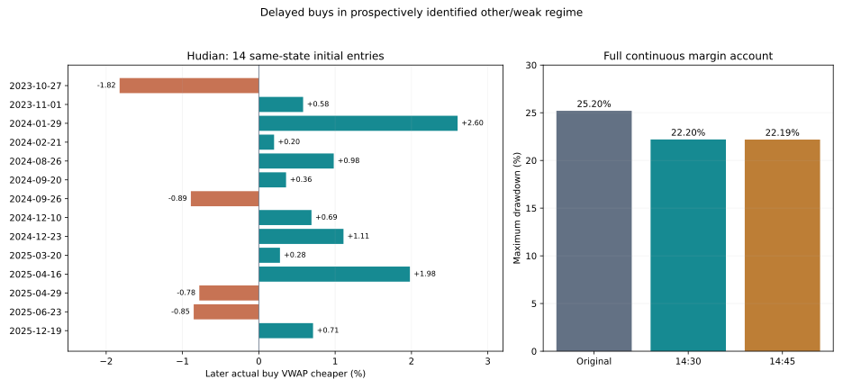

确定买入环境后，等到尾盘会更好吗？
预先固定14:30主检验、14:45敏感性对照 · 256组账户 · 160组同起点逐日对照 · 默认不变
结论：有局部价格优势，尚未得到稳定的收益与胜率提升
用户的方向值得检验：同一类环境可能适合跨日反转，却不适合早盘立即买入。本轮只改变买入时刻，不改买入日期的环境定义、目标仓位和原卖出信号。
原先14次沪电融资弱势环境建仓中，推迟至14:30有10次买得更便宜，平均便宜0.37%，中位数0.47%。但当日账户盈利次数从4/14降至3/14。买得便宜与买完当天盈利是两件事；尾盘也缩短了当天获利时间，费用仍需支付。原来的13/14最终盈利，是原策略跨日已结束周期的事后统计，并不是“每天买点都准确”，更不是尾盘方案的日内胜率。
连续三年沪电融资：净收益1226.51%→1235.11%，最大回撤25.20%→22.20%；期末资产只高约0.65%，并非收益大幅增加。完整周期胜率72.55%→70.87%。现金收益略降；胜宏收益也下降。第三年度和7月后尾盘方案反而恶化，暂不能替换默认。

“确定的日期”必须在当时选出
复用上一轮的other/weak环境：前一日未同时满足“收盘在60日均线上方，且120日均线高于20个交易日前”；当天09:45，已完成的前三根5分钟K线最后收盘低于当日开盘价，也低于累计成交均价。只使用该时点已知信息。原D策略先用此前RSI2与已披露业绩计算目标，满足该环境且原操作产生正向买入意图时，才推迟买入。
所有符合条件的日期都应用规则，包括后续亏损、加仓和未买满日期；不先挑出后来盈利的13次。主方案14:30启动，沿用最多5根K线执行窗口至14:50；对照14:45启动，只有2根窗口。原模型遇到无法成交或已接近目标时会停止当次挂单，并非保证每根重试。没有按当天最低点成交，也没有使用收盘后才知道的结果。未增加尾盘量价确认。
现有持仓保持原状态，正常减仓和风险处置仍按原规则；维护担保风险事件取消待买意图。尾盘队列只允许买入，不会因价格上涨后仓位变高而自动变成卖出。尾盘新买的股票当天不能卖出，未把本次实验当成完整做T往返。
本轮参数先登记后计算；不过环境来自反复研究的同一段历史，因此仍是探索性检验，不是新盲测。14:45只作预先登记的敏感性对照，不根据结果更换主方案。
同一天、同一初始账户：到底买便宜了多少？
每个对照从原策略起点重放到该日，之前持仓、现金和逐笔成交完全一致，只推迟该日买入。下表纳入原策略所有符合条件的实际买入日；“买便宜比例”仅指当日实际成交均价更低，不是扣费做T胜率。次日净值包含次日原规则的执行变化，不能单纯当作价差收益。
| 股票／账户 | 尾盘时刻 | 更便宜／买入日 | 平均便宜幅度 | 中位数 | 平均买入股数／原股数 | 少于原数量95%的日期 | 零买入 | 当日净值更高／次日更高 |
|---|---|---|---|---|---|---|---|---|
| 沪电／原现金 | 14:30 | 14/20 | 0.08% | 0.32% | 90.14% | 6/20 | 0 | 14/20；12/20 |
| 沪电／原现金 | 14:45 | 14/20 | 0.09% | 0.39% | 66.65% | 15/20 | 0 | 14/20；11/20 |
| 沪电／原融资默认 | 14:30 | 18/26 | 0.12% | 0.32% | 82.42% | 10/26 | 0 | 18/26；15/26 |
| 沪电／原融资默认 | 14:45 | 18/26 | 0.14% | 0.38% | 53.74% | 21/26 | 0 | 18/26；11/26 |
| 胜宏／原现金 | 14:30 | 7/16 | -0.33% | -0.12% | 96.04% | 2/16 | 0 | 7/16；7/16 |
| 胜宏／原现金 | 14:45 | 8/16 | -0.33% | -0.08% | 75.45% | 9/16 | 0 | 8/16；8/16 |
| 胜宏／原融资默认 | 14:30 | 9/18 | -0.34% | 0.02% | 83.39% | 8/18 | 0 | 9/18；9/18 |
| 胜宏／原融资默认 | 14:45 | 10/18 | -0.32% | 0.17% | 61.43% | 12/18 | 0 | 10/18；10/18 |
沪电融资14:30的26个同日配对中，18日买得便宜，但平均仅便宜0.12%，小于14次初始建仓子组。买入股数平均为原先的82.42%；14:45只剩53.74%。这不是“成交率”，因为目标股数还会随价格和权益变化，但能看出成交量与时间窗口约束的影响。不能把仓位减少带来的避险，全部归因为价格选择。26个配对原买入日与连续改造账户28个延期意图日不同，是此前仓位路径变化所致。
18/26的描述性Wilson 95%区间约50.0%—83.5%；10/14约45.4%—88.3%。样本小，区间未校正时间相关性与历史筛选，不能当未来成功率保证。
原先14次建仓逐笔检查
| 日期 | 原买入均价 | 14:30实际买入均价 | 便宜幅度 | 原／晚买股数 | 原当日收益 | 晚买当日收益 | 原完整周期盈利 |
|---|---|---|---|---|---|---|---|
| 2023-10-27 | 19.1887 | 19.5387 | -1.82% | 26,000 / 25,600 | 0.86% | -0.05% | 是 |
| 2023-11-01 | 19.3094 | 19.1973 | 0.58% | 26,200 / 18,100 | -0.31% | -0.02% | 是 |
| 2024-01-29 | 20.4774 | 19.9441 | 2.60% | 54,000 / 35,600 | -3.61% | -0.46% | 是 |
| 2024-02-21 | 24.6100 | 24.5608 | 0.20% | 20,400 / 20,400 | -0.15% | -0.05% | 是 |
| 2024-08-26 | 33.1358 | 32.8106 | 0.98% | 17,300 / 17,000 | -0.46% | 0.02% | 是 |
| 2024-09-20 | 32.2879 | 32.1726 | 0.36% | 35,000 / 15,500 | -0.39% | -0.03% | 是 |
| 2024-09-26 | 34.4145 | 34.7209 | -0.89% | 20,200 / 19,500 | 0.66% | 0.21% | 是 |
| 2024-12-10 | 36.9466 | 36.6916 | 0.69% | 62,600 / 63,100 | -1.22% | -0.19% | 是 |
| 2024-12-23 | 38.7193 | 38.2898 | 1.11% | 20,600 / 20,800 | -0.71% | -0.16% | 是 |
| 2025-03-20 | 34.7807 | 34.6843 | 0.28% | 46,100 / 40,600 | -0.46% | -0.19% | 否 |
| 2025-04-16 | 26.7554 | 26.2257 | 1.98% | 34,200 / 34,800 | -0.59% | 0.40% | 是 |
| 2025-04-29 | 27.4420 | 27.6560 | -0.78% | 34,300 / 33,300 | 0.35% | -0.03% | 是 |
| 2025-06-23 | 42.1200 | 42.4793 | -0.85% | 25,200 / 25,000 | 0.39% | -0.04% | 是 |
| 2025-12-19 | 68.1347 | 67.6506 | 0.71% | 55,300 / 53,200 | -0.97% | -0.21% | 是 |
例子：2024-01-29晚买均价便宜2.60%，但股数也从54,000降至35,600；不能把当日减亏完全归因于买得低。2023-10-27则晚买贵1.82%，把原当日盈利变成小亏。2025-03-20虽买便宜，原跨日周期仍然亏损。14次中只有10次当日净值改善、8次次日净值改善，价格优势不一定转化为持有优势。
完整账户：2023-10-09至2026-10-08
| 股票／方案 | 净收益 | 最大回撤¹ | 平均仓位 | 完整周期盈利／结束周期 | 盈利日／全部日 | 最差5%日均收益 |
|---|---|---|---|---|---|---|
| 沪电／全仓持有 | 423.59% | 48.19% | 98.80% | 无结束周期 | 374/727 = 51.44% | -7.28% |
| 沪电／原现金 | 537.26% | 19.18% | 44.16% | 76/109 = 69.72% | 278/727 = 38.24% | -4.32% |
| 沪电／原融资默认 | 1226.51% | 25.20% | 59.37% | 74/102 = 72.55% | 281/727 = 38.65% | -6.05% |
| 沪电／固定50% | 156.82% | 27.08% | 49.87% | 无结束周期 | 375/727 = 51.58% | -3.72% |
| 沪电／现金·14:30 | 534.02% | 17.02% | 43.92% | 74/108 = 68.52% | 275/727 = 37.83% | -4.27% |
| 沪电／融资·14:30 | 1235.11% | 22.20% | 58.42% | 73/103 = 70.87% | 277/727 = 38.10% | -5.87% |
| 沪电／现金·14:45 | 544.58% | 16.31% | 43.35% | 75/110 = 68.18% | 274/727 = 37.69% | -4.16% |
| 沪电／融资·14:45 | 1158.85% | 22.19% | 57.18% | 76/106 = 71.70% | 279/727 = 38.38% | -5.79% |
| 胜宏／全仓持有 | 818.57% | 55.12% | 99.55% | 无结束周期 | 340/727 = 46.77% | -8.62% |
| 胜宏／原现金 | 191.85% | 34.50% | 38.15% | 61/98 = 62.24% | 226/727 = 31.09% | -5.63% |
| 胜宏／原融资默认 | 300.94% | 48.39% | 53.04% | 58/96 = 60.42% | 225/727 = 30.95% | -8.37% |
| 胜宏／固定50% | 264.75% | 32.39% | 50.02% | 无结束周期 | 340/727 = 46.77% | -4.30% |
| 胜宏／现金·14:30 | 183.29% | 34.94% | 38.08% | 61/98 = 62.24% | 223/727 = 30.67% | -5.61% |
| 胜宏／融资·14:30 | 281.98% | 47.36% | 52.43% | 60/99 = 60.61% | 221/727 = 30.40% | -8.20% |
| 胜宏／现金·14:45 | 196.50% | 32.66% | 37.64% | 62/99 = 62.63% | 221/727 = 30.40% | -5.46% |
| 胜宏／融资·14:45 | 314.37% | 45.54% | 51.57% | 60/98 = 61.22% | 221/727 = 30.40% | -7.95% |
¹ 最大回撤按5分钟采样与官方日收盘，非逐笔极值。每账户100万元独立起步；净收益含佣金、税费、滑点和融资利息。完整周期以空仓到再次空仓定义；平盘和空仓不算盈利日，未平仓按市值计入总收益和回撤。此实验没有独立配对做T交易，因此完整做T胜率不适用。
14:30沪电融资回撤相对减少约11.9%，但现金收益537.26%→534.02%；胜宏融资收益300.94%→281.98%，回撤48.39%→47.36%，现金回撤还略增。14:45沪电融资收益反降至1158.85%，并非越晚越好。
固定年度与时序分段：何时失效？
| 沪电融资区间（各自重新起步） | 原收益 | 14:30收益 | 原回撤 | 14:30回撤 |
|---|---|---|---|---|
| early | 64.81% | 70.38% | 20.34% | 20.29% |
| later | 482.72% | 504.35% | 25.93% | 22.80% |
| julyOn | 37.17% | 28.99% | 22.90% | 25.02% |
| year1 | 41.74% | 45.33% | 20.34% | 20.29% |
| year2 | 126.88% | 138.46% | 26.20% | 22.13% |
| year3 | 334.20% | 306.19% | 22.96% | 23.89% |
early：2023-10-09至2024末；later：2025初至2026-06-30；julyOn：2026-07-01起；年度从每年10月9日开始。在沪电融资固定年度中，14:30只有2/3年度同时提高收益并降低回撤，第三年收益334.20%→306.19%、回撤22.96%→23.89%。7月后独立账户收益37.17%→28.99%，回撤22.90%→25.02%。这直接否定了“该环境一律等尾盘就更好”的说法。
季度连续账户对照、63日滚动结果均已保存；13个季度（最后一段仅1天）中表现不统一，不用事后挑选好的季度继续优化。
10基点滑点与更早行情
| 股票／方案 | 净收益 | 最大回撤¹ | 平均仓位 | 完整周期盈利／结束周期 | 盈利日／全部日 | 最差5%日均收益 |
|---|---|---|---|---|---|---|
| 沪电／原现金 | 460.52% | 19.75% | 44.19% | 73/108 = 67.59% | 288/727 = 39.61% | -4.34% |
| 沪电／原融资默认 | 1081.02% | 25.95% | 59.74% | 68/100 = 68.00% | 278/727 = 38.24% | -6.08% |
| 沪电／现金·14:30 | 461.26% | 17.70% | 43.96% | 74/108 = 68.52% | 278/727 = 38.24% | -4.30% |
| 沪电／融资·14:30 | 1089.36% | 22.24% | 58.95% | 71/102 = 69.61% | 277/727 = 38.10% | -5.89% |
| 胜宏／原现金 | 165.21% | 34.82% | 38.09% | 61/98 = 62.24% | 223/727 = 30.67% | -5.65% |
| 胜宏／原融资默认 | 246.28% | 48.77% | 53.06% | 57/97 = 58.76% | 225/727 = 30.95% | -8.40% |
| 胜宏／现金·14:30 | 158.70% | 35.25% | 38.07% | 61/98 = 62.24% | 220/727 = 30.26% | -5.63% |
| 胜宏／融资·14:30 | 227.35% | 47.83% | 52.57% | 57/97 = 58.76% | 220/727 = 30.26% | -8.26% |
以下为2020-01-02至2023-09-28的独立账户；更早数据亦已见，不是新盲测。
| 股票／方案 | 净收益 | 最大回撤¹ | 平均仓位 | 完整周期盈利／结束周期 | 盈利日／全部日 | 最差5%日均收益 |
|---|---|---|---|---|---|---|
| 沪电／原现金 | -20.02% | 59.42% | 36.15% | 38/63 = 60.32% | 258/910 = 28.35% | -3.57% |
| 沪电／原融资默认 | -23.97% | 72.81% | 49.43% | 37/57 = 64.91% | 269/910 = 29.56% | -5.09% |
| 沪电／现金·14:30 | -17.50% | 57.11% | 35.82% | 39/65 = 60.00% | 338/910 = 37.14% | -3.42% |
| 沪电／融资·14:30 | -14.55% | 68.54% | 47.35% | 38/58 = 65.52% | 332/910 = 36.48% | -4.72% |
| 胜宏／原现金 | -4.50% | 47.10% | 42.11% | 32/48 = 66.67% | 341/910 = 37.47% | -4.05% |
| 胜宏／原融资默认 | -6.67% | 60.81% | 55.03% | 24/38 = 63.16% | 342/910 = 37.58% | -5.69% |
| 胜宏／现金·14:30 | -2.35% | 44.89% | 41.05% | 33/51 = 64.71% | 343/910 = 37.69% | -4.01% |
| 胜宏／融资·14:30 | -0.52% | 57.47% | 51.96% | 29/45 = 64.44% | 333/910 = 36.59% | -5.50% |
沪电融资更早回撤72.81%→68.54%，仍远高于可称稳定减险的程度，收益仍为−14.55%。近期10基点滑点下改善保留，不足以抵消跨阶段失败。当前优先回撤与胜率，无收益硬下限；原现金保留全仓收益并降回撤25%、财富1.20倍只保留历史对照，此处不宣称原目标达标。
连续持仓7月前后、领先比例与未平仓
| 方案 | 截至6月末连续收益 | 7月后连续收益 | 累计领先全仓 | 最长落后全仓 | 63日滚动领先全仓 | 未结束周期市值损益 | 周期盈亏比 |
|---|---|---|---|---|---|---|---|
| 沪电／原现金 | 381.11% | 32.46% | 23.93% | 276日 | 47.97% | -192,318元 | 3.86 |
| 沪电／原融资默认 | 779.53% | 50.82% | 61.90% | 235日 | 53.98% | -411,989元 | 6.55 |
| 沪电／现金·14:30 | 398.94% | 27.08% | 25.45% | 267日 | 48.72% | -191,737元 | 3.68 |
| 沪电／融资·14:30 | 809.93% | 46.73% | 65.47% | 228日 | 54.59% | -560,830元 | 5.72 |
| 胜宏／原现金 | 239.95% | -14.15% | 13.07% | 630日 | 32.48% | -220,283元 | 1.71 |
| 胜宏／原融资默认 | 402.78% | -20.26% | 13.48% | 569日 | 38.65% | -468,082元 | 1.66 |
| 胜宏／现金·14:30 | 228.07% | -13.65% | 13.07% | 630日 | 31.28% | -115,557元 | 1.66 |
| 胜宏／融资·14:30 | 384.29% | -21.13% | 13.48% | 569日 | 36.09% | -245,812元 | 1.58 |
此表7月前后承接原持仓，不能与分段重置账户混用；两段收益应复利相乘。盈利周期盈亏比为盈利总额／亏损总额，不是单笔赔率。尾部、最差日、非平盘盈利比例、费用利息及全部未结束周期均在证据包。
核验、数据限制与下一步
完成256组账户、384项原指标复现、9675笔账本与6011笔融资额度核验；160组相同历史前缀逐日配对、506笔延期成交时间检查、16组周期损益核对。延迟模块关闭与原引擎96组字段完全一致；7个合成案例覆盖T+1、跌后风险取消、涨停、零成交量和买单不能变成卖单。
沿用实际股票佣金万1、最低5元；日期对应印花税与过户费；单边5/10基点滑点；前根5分钟成交量1%与单笔30万股上限；100股整手；涨跌停限制。融资年息6%、买入后欠款≤当前净资产50%，持有期被动超仓不机械减仓。分红税仍为策略20%、长期全仓0%的简化假设。
已核验回测截止2026-10-08；10月9日分钟极值与日线不一致，未虚构修补并纳入。历史分钟质量、财报修订版本、券商历史融资资格尚未解决。此前已测试过“午后风险卖出后尾盘买回”，本轮是另一种先验环境下原买入意图延迟，不混用结果。反复筛选历史的风险见原作者论文The Probability of Backtest Overfitting（本轮访问2026-10-10；仅为方法依据，不是本策略有效性的证据，也未计算PBO）。
可以保留14:30作为候选执行方式。下一步有价值的是：以预先定义的尾盘成交能力和当时路径，区分继续下跌与提前反弹，分开测试“分批推迟”与“全量推迟”；不能再按后验盈利日期设例外。需要冻结后独立行情与真实数据质量改善，才讨论接入默认。本轮不改主看板默认、不下任何真实订单。